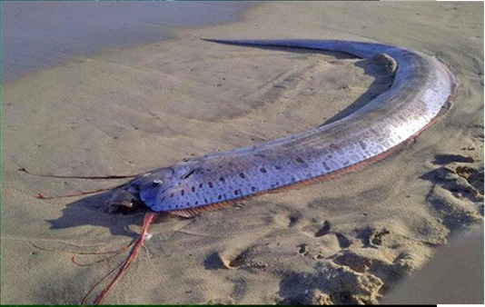

СЕМЕЙСТВА вид лучепёрых рыб семейства ремнетелых
ГЛУБИНА:до 500–700 м, иногда до 1000 м.
КОГДА ОТКРЫЛИ:в 1765 и 1769 годах на побережье Глесвера
ТИП ПИТАНИЯ:преимущественный хищник-планктофаг.
Обычно рыба плавает головой кверху, располагая тело в положении, близком к вертикальному. При этом она поддерживает от опускания тело, удельный вес которого больше, чем вес воды.
Сельдяной король передвигается медленно, придавая телу ускорение волноподобными движениями спинного плавника. При необходимости ускорения рыба начинает извиваться, будто не плывёт, а ползёт по воде, но большой скорости не достигает.
В отличие от большинства глубоководных хищников, сельдяной король не нападает на крупную добычу. Его рацион состоит в основном из планктона, мелких ракообразных и кальмаров, которых он заглатывает, создавая водный поток с помощью особых жаберных структур.
В основном сельдяной король ведёт ночной образ жизни.

наверх